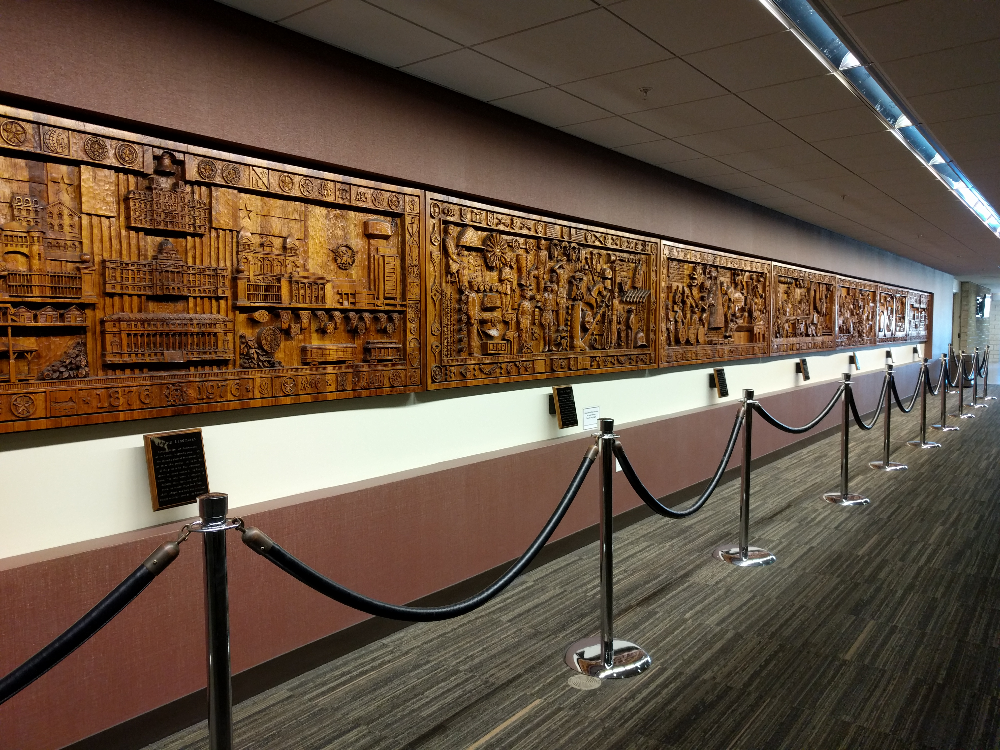

This bench is in front of the Chemistry department at Texas A&M University. It faces a fountain and the famous Aggieland Ausbury Water Tower. The most interesting thing about this bench is that it sits alone, with no other benches near it. It's also painted maroon, the official school color.

The Memorial Student Center, abbreviated MSC, is a central building to the Texas A&M University campus. It represents diversity, respect, and selfless service. Many Aggies have not only graduated to advance their respective fields, but have also served the nation and paid the ultimate price. In the spirit of excellence, the MSC seeks to maintain this honor by hosting events, displaying works of art, and serving students.